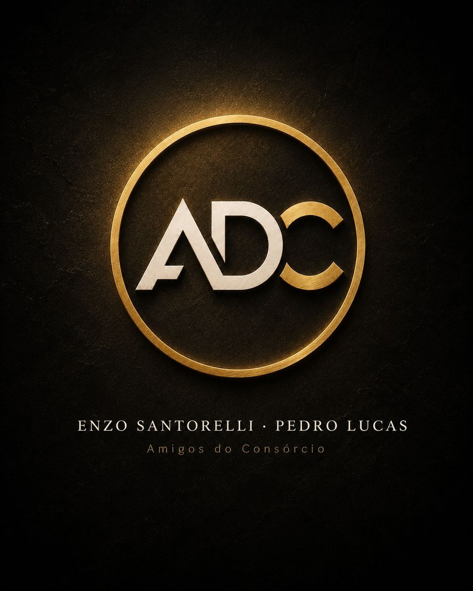

Pedro Lucas
Especialista em consórcio e recordista em cartas contempladas. Atende de pessoa física a operação de empresa e é implacável em estratégia de lance — porque quem tem prazo pra cumprir não pode depender só de sorteio.
Somos dois consultores que cansaram de ver gente assinando contrato sem entender o que assinou. Aqui a conversa começa pelo que você quer conquistar — e o número só aparece depois.
Consórcio é compra programada, regulada pelo Banco Central. Um grupo se junta para comprar bens do mesmo tipo e, todo mês, alguém é contemplado — por sorteio ou por lance. Sem banco no meio cobrando juros pelo dinheiro.
Define o valor do bem e o prazo. A parcela sai da divisão desse valor pelo número de meses, mais a taxa de administração.
Grupo formado, assembleias mensais. Da primeira em diante você já concorre — sem entrada.
Por sorteio ou por lance. Quem tem prazo trabalha com estratégia; quem tem paciência espera e paga menos.
Carta liberada, você negocia como comprador à vista — e desconto de quem paga à vista é outro papo.

Fundamos o ADC porque cansamos de ver gente saindo de uma reunião de consórcio mais confusa do que entrou.
Conhecer o Enzo e o PedroEscolha uma modalidade e veja o anel percorrer até ela.
Zero km ou seminovo, nacional ou importado, carro ou moto. Você escolhe a marca, o modelo e a loja — a carta é dinheiro à vista na sua mão.
Casa, apartamento, terreno, sala comercial, construção ou reforma. Serve também para quitar financiamento e parar de alimentar juros.
Aquele projeto que sempre fica pra depois: casamento, intercâmbio, faculdade, tratamento de saúde, viagem.
Caminhão, implemento, máquina agrícola, equipamento. Pro autônomo que quer o próprio cavalo e pra empresa que precisa crescer sem travar o caixa.
O ADC nasceu de uma inconformidade: consórcio bom explicado de um jeito ruim. Fundamos a marca para fazer diferente — atendimento direto, sem central e sem letra miúda. Fazemos parte do time Embracon e mantemos parcerias com outras administradoras, o que nos deixa livres para indicar o plano que serve a você, e não o que dá mais comissão. Você escolhe com quem falar.
Especialista em consórcio e recordista em cartas contempladas. Atende de pessoa física a operação de empresa e é implacável em estratégia de lance — porque quem tem prazo pra cumprir não pode depender só de sorteio.
Especialista em consórcio e recordista em cartas contempladas. Trabalha as quatro modalidades e explica o produto inteiro antes de falar em parcela — inclusive o que o consórcio não é. Quem senta com ele sai sabendo exatamente o que assinou.
Financiamento e consórcio levam ao mesmo lugar. O que muda é quanto custa o caminho — e a conta só aparece inteira no fim do plano.
Não tem juros. O que existe é a taxa de administração, definida em contrato e diluída nas parcelas — é o que remunera a administradora por gerir o grupo. Por isso o custo total costuma ficar bem abaixo do de um financiamento.
Na contemplação, que acontece por sorteio nas assembleias mensais ou por lance, quando você antecipa parte do valor. Não existe data garantida de sorteio — quem precisa do bem em prazo certo trabalha com estratégia de lance, e isso a gente monta junto.
Não. Você entra no grupo pagando a primeira parcela e já concorre desde a primeira assembleia.
No consórcio de imóvel, sim — dentro das regras da Caixa, o FGTS pode ser usado para dar lance, complementar a carta ou amortizar parcelas.
Dá pra transferir a cota para outra pessoa ou pedir o desligamento, com a devolução prevista em contrato após o encerramento do grupo. É um dos pontos que explicamos antes da assinatura, não depois.
Sim. A carta é reajustada pelo índice do contrato para acompanhar o preço do bem, de forma que o seu crédito não perca poder de compra ao longo do plano.
Não achou sua pergunta aqui?
Manda a dúvida no WhatsAppSem compromisso e sem enrolação. Escolhe com quem falar — o Enzo ou o Pedro respondem pessoalmente.
@amigosdoconsorcio_